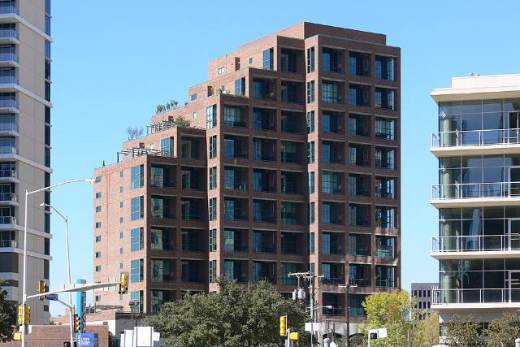
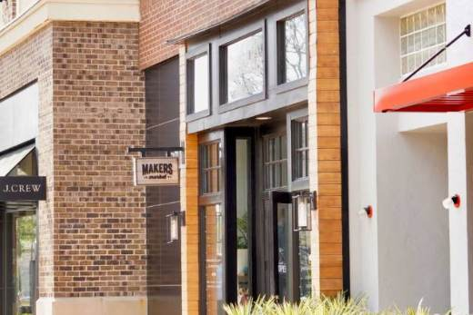
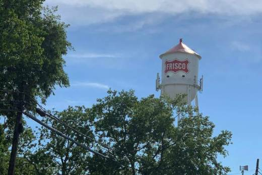
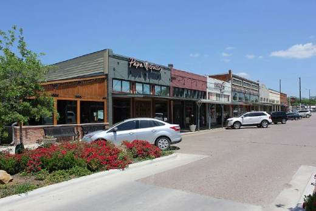
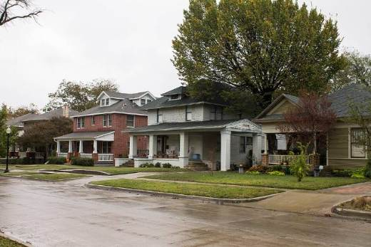
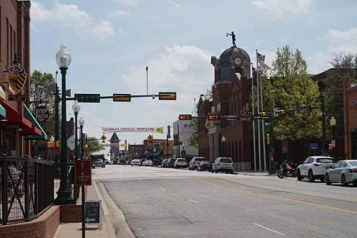

Moving to Dallas–Fort Worth?
The money, the areas and the move, in one quick read. Built for people coming from out of state.
DFW by the numbers
Sources: Zillow Research via our market page; Republic Title 2025 DFW tax rates; Texas Department of Insurance.
The four sides of DFW
Most people pick a side first, then a neighborhood.
Plano · Frisco · McKinney · Allen · Prosper · Celina · Richardson
Where's work? Your commute rules everything here.
How long a drive? 20 minutes or 45 opens very different areas.
New or character? New builds are north; older homes are close-in.
Which area fits you?
Find what matters most, then follow the dots across. Great fit Good fit
| If you want… | Uptown & E. Dallas | Richardson | Plano | Frisco | McKinney | Prosper & Celina | FW Near Southside | Grapevine & Flower Mound |
|---|---|---|---|---|---|---|---|---|
| Walk to restaurants & shops | ||||||||
| Brand-new construction | ||||||||
| Quick drive to downtown Dallas | ||||||||
| Close to DFW Airport | ||||||||
| Near big corporate job hubs | ||||||||
| Historic homes & character | ||||||||
| Bigger lots | ||||||||
| Typical home value | Varies | $437K | $498K | $640K | $473K | $512K–760K | Varies | $549K–600K |
Typical values: each city's Zillow home value, Sept. 2026. "Varies" means the citywide number doesn't describe that neighborhood. Schools are assigned by address: check any home on the Schools page.

Uptown & East Dallas Varies
Best for: city living- Walk to restaurants, Katy Trail and Klyde Warren Park
- Condos and townhomes in Uptown
- 1920s–1950s homes near White Rock Lake
Richardson $437K
Best for: close-in value- DART rail into downtown Dallas
- Telecom Corridor and CityLine jobs
- 1960s–1980s ranch homes, mature trees

Plano $498K
Best for: an established suburb- Legacy West offices, shops and dining
- Big parks and trails like Arbor Hills
- Mostly 1980s–2000s homes

Frisco $640K
Best for: newer homes & amenities- The Star, PGA Frisco and pro soccer
- Mostly 2000s and newer, master-planned
- Dallas North Tollway and SH 121
McKinney $473K
Best for: old charm plus new builds- Historic downtown square
- Older homes near the square
- New neighborhoods to the north and west

Prosper & Celina $512K–760K
Best for: brand-new & more space- Some of DFW's newest neighborhoods
- Bigger lots and a small-town feel
- Ask about MUD and PID taxes

FW Near Southside Varies
Best for: laid-back city life- Magnolia Avenue restaurants
- Bungalows in historic Fairmount
- Near downtown Fort Worth and TCU

Grapevine & Flower Mound $549K–600K
Best for: frequent flyers- Next door to DFW Airport
- Historic Main Street and Grapevine Lake
- Larger lots in Flower Mound
Budget the payment, not the price
Taxes and insurance add about $900–$1,100 a month on a typical DFW home.
Principal & interestProperty tax (before homestead)Insurance (state average)
Not included: HOA dues and mortgage insurance. Rates change daily; your lender gives the real number. Tax: 2025 combined rates, Plano 1.71%, Dallas 2.23%.
File your homestead
Takes $140,000 off your school-tax value. File with your county appraisal district right after closing.
Quote insurance early
Get a quote before you make an offer. An older roof can raise the price a lot.
Ask about HOA, MUD, PID
Newer areas often add HOA dues or a utility-district tax. MUDs & PIDs explained
Plan for the extras
PMI if you put down under 20%, and sales tax up to 8.25% on what you buy.
Texas homes 101
Clay soil and spring hail shape almost everything an inspector checks.
Slab foundations
- Some movement is normal
- Watch for sticking doors and wall cracks
- Ask for repair records and warranties
Roofs & hail
- Ask the roof's age
- Ask about past hail claims
- Older roofs cost more to insure
No basements
- Storage lives in the garage and attic
- Some new homes add a safe room
Watering rules
- Many cities limit sprinkler days
- Even moisture helps protect the foundation
Pools are common
- Budget for upkeep
- Expect higher insurance
New vs. resale
- Builders offer rate buydowns and credits
- Smaller lots, often a MUD or HOA
- Builder sales staff work for the builder
Tip: always get a full inspection during your option period, even on a brand-new home. In DFW, add a foundation check and a roof check.
How buying works in Texas
Standard state forms, a title company and no attorney needed at closing.
- Get pre-approvedWith a Texas lender, so your budget includes taxes.
- Sign a buyer agreementRequired before touring. It spells out what your agent does and how they're paid.
- Make an offerOn the TREC contract: price, closing date, option period, earnest money.
- The option period The Texas differencePay a small fee to the seller for usually 5–10 days to inspect and back out for any reason. After it ends, walking away can cost your earnest money.
- Inspect & negotiateAsk for repairs or a credit, or walk away.
- Appraisal, survey & titleLender appraises, title company clears ownership, survey shows the lot lines.
- Close & get keysSign at the title company. Keys once the loan funds.
- File your homesteadWith your county appraisal district, right after closing.
Good to know: Texas is a non-disclosure state, so sale prices aren't public. The right offer comes from your agent's sales data, not a website estimate.
Your move checklist
90 days out Plan
- Call Kohl; set your must-haves
- Get pre-approved
- Decide: buy now or rent first
- Check school districts
60 days out Look
- 2–3 day house-hunting trip
- Or tour by live video
- Get insurance quotes
- Book movers early
30 days out Set up
- Lock your closing or lease date
- Pick electricity at Power to Choose
- Water, trash and internet
- Order an NTTA TollTag
First 30 days Settle in
- File your homestead
- Emissions test for your car
- Register at the county tax office
- Book a DPS license appointment
First 90 days Finish
- Get your Texas driver license
- Register to vote
- Update your address everywhere
- Find a doctor, dentist and vet
Car rules: TxDMV, New to Texas. Emissions tests apply in Dallas, Collin, Denton, Tarrant, Rockwall and other listed counties. Garland and Denton run their own electric utilities. More detail: the first-90-days guide.
Weather & getting around
Long, hot summers
June–Sept. Look for shade trees, good insulation and a newer A/C.
Storm season
Hail and tornado warnings. Sirens mean an inside room on the lowest floor.
Ice, not snow
Rare, but roads and schools often close when it hits.
- 2 big airports
- DFW International, a hub for American Airlines, and Dallas Love Field, home of Southwest.
- Toll roads
- Dallas North Tollway, Bush Turnpike and Sam Rayburn are the fast routes north. A TollTag beats pay-by-mail. Toll roads 101
- Trains
- DART light rail, the TRE between downtown Dallas and Fort Worth, and the Silver Line to DFW Airport. Most people still drive.
- Game days
- Cowboys, Rangers, Mavericks, Stars, FC Dallas and the Wings. Sports guide
Not sure yet? Rent first.
A 3–6 month rental lets you learn the commutes before you commit. Ask about break-lease terms so buying early doesn't mean two payments.
Kohl can help here too. His company, Klaus Property Group, manages furnished mid-term rentals in Dallas.

Narrow DFW down in one call
A free 30-minute phone call with Kohl gets you to two or three areas that fit your work, budget and timing. Book it before your house-hunting trip, even if you're months away.
Get the Moving to DFW guide
- Everything on this page as a PDF to save or print
- 8 area snapshots and the "which area fits you" chart
- The full move checklist